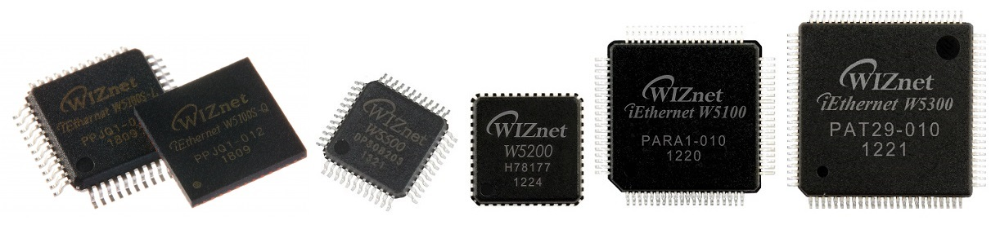

This Socket APIs provide guides to WIZnet Hardwired TCP/IP Chips (WIZCHIP) user.
It contains not olny Socket APIs but also accessing registers, configuration and interface to WIZCHIP.
It proposes to integrate for user application program. It is easy to change the enhanced WIZCHIP and migrate user application.
Available WIZCHIP product

- W5100S
- W5500
- W5200
- W5100
- W5300
Version 4.0.0
Release Notes
- 2018/03/29
- 2016/05/03 : V3.0.3
- In W5300, Fixed some compile errors in close(). Refer to M20160503
- In close(), replace socket() with some command sequences.
- 2016/04/26 : V3.0.2
- 2015/07/15 : V3.0.1
- Bug fixed : In W5100, CS control problem is fixed to read/write buffer read/write. Refer to M20150715.
- 2015/06/01
- 3rd Released V3.0.0
- Add W5300 to ioLibrary
- 2015/04/01
- Second Released V2.0.0
- Add W5100 & W5200 to ioLibrary
- 2013/10/01
 1.9.1
1.9.1